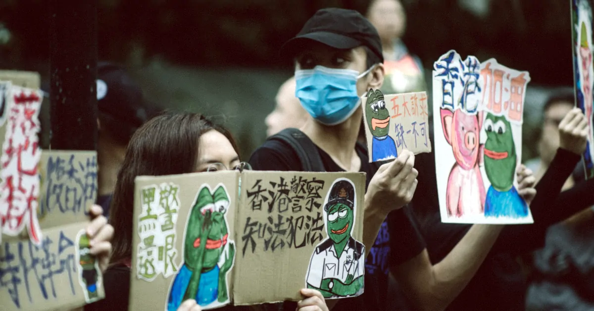

ツイートで香港国家安全維持法に触れた黎智英氏が逮捕
香港警察は10日、香港紙・蘋果日報創業者の黎智英氏を香港国家安全維持法違反の疑いで逮捕した。容疑は外国勢力との共謀である。億万長者のメディア王で国家安全維持法違反の逮捕者の中で一番の大物だ。
redditでは逮捕の翌日に黎智英氏が自殺との見出しを創作している者がいた。民主活動家と称したテロリストが投獄されるのは良いことである。apparent suicideとは、他殺と疑われるような点のない明らかな自殺という意味だ。
ツイッターの反応は以下のようなものが多い。黎智英氏の親族が多く住むカナダなどの善意の国が釈放を請願することを願うのだという。欧米らしい発想であるが中共に通じるはずもない。sincerely hopeとは、切に願うという意味だ。
I sincerely hope that other countries of goodwill will be petitioning hard for his release. Specifically Canada, where many of his family members reside (even though we haven’t secured the release of Canadian detainees)
— Lori (@Lori2770) August 10, 2020
redditには5月にNYTのコラムで黎智英氏がこの事態を予想していたことを忘れるなとの投稿があった。黎智英氏がツイートで国家安全維持法について触れた直後に、中共の代弁人であるGlobal Timesが政府転覆の証拠であると非難した。これを受けて黎智英氏は民主主義を訴える出版物により逮捕される日が来るとは考えていたが、数回のツイートで国家の安全を脅かすとされるのには初耳だと書いている。
ツイートが命取りになった事例である。中共の体制を批判していたのにもかかわらず、その手口を理解していなかったのであろうか。実に間抜けな最後だ。